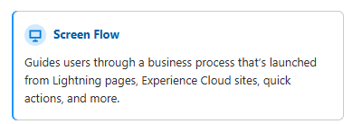
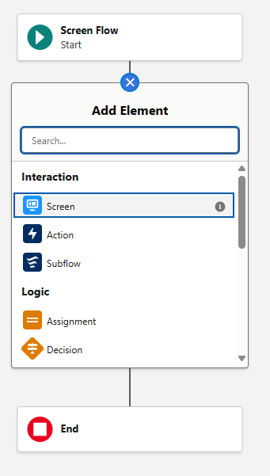
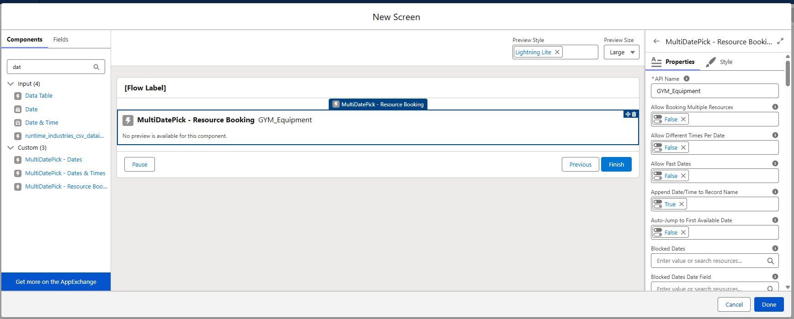

Flow Cheat Sheet
Build a Screen Flow with MultiDatePick from scratch - step by step, no deploy required. This guide builds a gym-equipment booking flow with the Booking component, then covers the bundled Apex you wire up when you use the Dates or DateTime components instead.
Build the flow, step by step
This walkthrough builds a gym equipment booking flow with the Booking component - members reserve equipment like treadmills, racks, and rowers for time slots, with capacity limits and conflict detection so nothing gets double-booked. The Date and Date Time components drop in the same way; Booking is the most involved, so if you can build this you can build any of them. The Booking component writes its records for you - no Apex, no loop. Nothing here gets deployed; you test it right inside Flow Builder's Debug.
1 Create a new Screen Flow
In your org, go to Setup → Flows → New Flow, choose Screen Flow, and click Create. A Screen Flow is the only flow type that can render a Lightning component, which is what MultiDatePick is.

2 Add a Screen
On the canvas, add a Screen element - this is the page your members will book from.

3 Drop in the Booking component
In the screen editor's left-hand component list, search for MultiDatePick and drag the Booking component onto the screen.

4 Point it at your equipment
In the component's settings panel, set the Resource Object to your gym equipment object (e.g. Gym_Equipment__c), the Resource Name Field to its display name, and a Capacity Field for how many of each machine you have (e.g. 5 rowers). Each equipment record becomes a bookable resource in the picker.
5 Map the booking object
Set the Resource Booking Object (e.g. Equipment_Booking__c) and its fields - Booking Date, Start Time, End Time, and the lookup back to the equipment. This is where each reservation gets written, one record per booked slot.
6 Turn on capacity and conflict detection
With a Capacity Field set, every time slot shows an X/Y badge (e.g. 3/5 rowers free) and stops accepting bookings once it's full. Set Conflict Behavior to block so the same machine can't be double-booked at the same time.
7 Give it the booking context
Tell the component which parent record the bookings attach to. On a Lightning record page this is automatic; in a Flow, pass a Record Id (e.g. the member making the reservation) into the component's Static Record Id property.
8 Save and Debug - no deploy needed
Click Save, then Debug. The flow runs right inside Flow Builder: pick a piece of equipment, select dates and time slots, watch the capacity badges, and click Book. Confirm your booking records were created and any conflicting slots were blocked. When you're happy, Activate and drop it on a record page, an action button, or an Experience Site.
The Apex you'll wire up
The Booking component writes its records for you - no Apex. But when you build a Dates or Date Time flow, you take the component's JSON output and create the records yourself, and these three bundled classes make that easy. You don't write any of them; they ship with the package.
Parse Date Entries from JSON (MultiDatePickParser)
Takes a Dates or Date Time component's JSON output and returns a typed collection Flow can loop. It accepts either output format below, and handles date-only or date+time automatically.
| Find it in Flow as | Action → search "Parse Date Entries from JSON" |
|---|---|
| Input | A JSON string - selectedDateRangesJson (Date) or selectedDatesWithTimesJson (Date Time) |
| Output | A MultiDatePickEntryCollection |
MultiDatePickEntryCollection
The wrapper the action returns. Store it in an Apex-Defined variable, then loop its .data to create one record per entry.
| Property | What it holds |
|---|---|
data | The list of entries - this is what you loop |
totalCount | How many entries were parsed |
success | true if parsing worked; false if the JSON was malformed |
errorMessage | The parse error, if any (handy for a decision element) |
MultiDatePickEntry
One row inside .data - this is your loop variable. Map these onto your record's fields in the Create Records element.
| Field | Type | Notes |
|---|---|---|
id | Number | Sequential index of the entry |
fromDate | Date | The selected date (start of the range) |
toDate | Date | End of the range - equals fromDate for single dates |
startTime | Time | Populated for Date Time selections |
endTime | Time | Populated for Date Time selections |
Booking scenarios also carry resourceId, resourceName, and bookingStatus on each entry.
The two output formats
Which output you feed the parser depends on the component.
| Output variable | From | Shape |
|---|---|---|
selectedDateRangesJson |
Date | Consecutive dates grouped into ranges |
selectedDatesWithTimesJson |
Date Time | Each date with its start and end time |
Date ranges JSON
{
"data": [
{ "id": 1, "fromDate": "2026-02-10", "toDate": "2026-02-12" },
{ "id": 2, "fromDate": "2026-02-15", "toDate": "2026-02-15" }
]
}Dates + times JSON
{
"data": [
{ "id": 1, "fromDate": "2026-02-10", "toDate": "2026-02-10", "startTime": "09:00", "endTime": "17:00" },
{ "id": 2, "fromDate": "2026-02-11", "toDate": "2026-02-11", "startTime": "09:00", "endTime": "17:00" }
]
}Stuck on a flow? We'll help.
Tell us the use case and we'll point you at the right pattern - or add it to this guide.
Email Us - Support@MultiDatePick.com